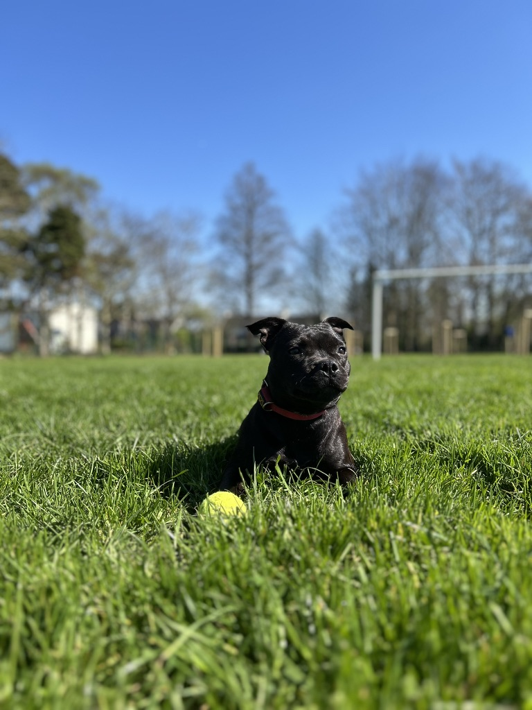
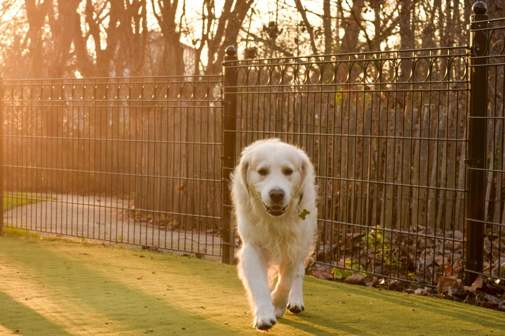
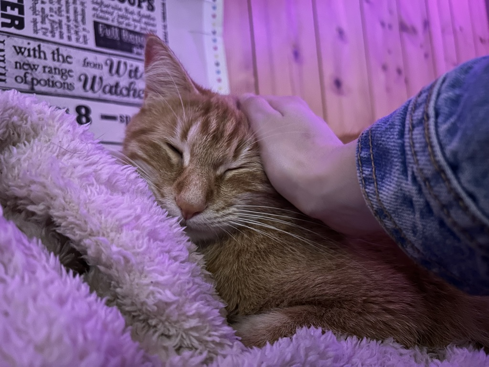
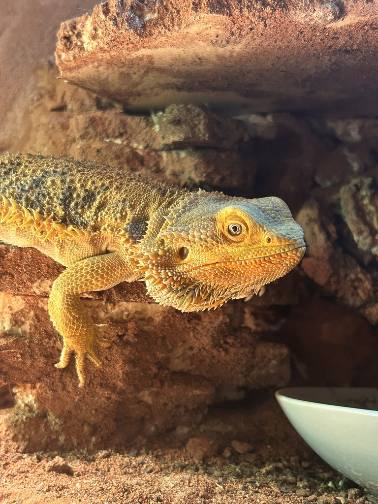
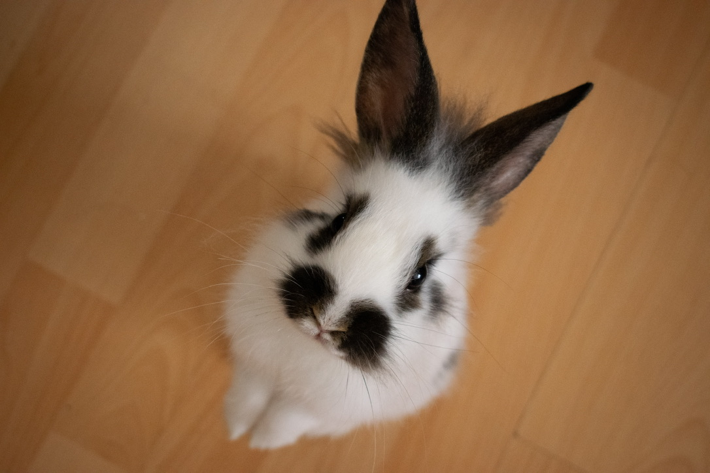
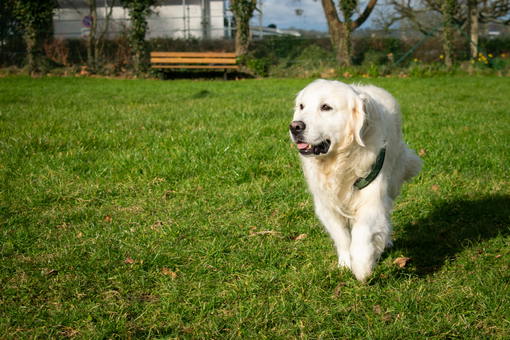

Visites à domicile
Des passages organisés chez vous pour nourrir, rassurer, surveiller, jouer et préserver les repères de votre animal pendant votre absence.
Chez Thata propose un pet sitting doux, fiable et soigné à Brest, avec des visites à domicile et des promenades adaptées à tous types d’animaux.
Bien sûr nous adapterons les services à vos besoins spécifiques.
Des passages organisés chez vous pour nourrir, rassurer, surveiller, jouer et préserver les repères de votre animal pendant votre absence.
Des balades adaptées au rythme, à l’âge et au tempérament de votre compagnon, dans une approche calme, attentive et sécurisée.
Pensions pour petit chien (- de 15 kg), durée max de 1 semaine.
Non catégorisé et OK chat.
Solution adapté pour abscences ponstuel et pour des chiens n'aimant pas rester seul.
Services à la demande pour capturer les moments précieux avec votre animal.
Passionnée par les animaux, je propose un service de proximité à Brest centré sur la confiance, la régularité et le respect des habitudes de chaque compagnon.
L’objectif est simple : vous permettre de partir l’esprit plus léger, tout en offrant à votre animal une présence rassurante et adaptée à ses besoins.






Tu peux me contacter directement par téléphone, par mail ou via Instagram, ou utiliser le formulaire pour détailler ton besoin.
Tous types d’animaux peuvent être pris en charge selon leurs besoins, leurs habitudes et les conditions de la demande.
La demande peut être envoyée via le formulaire ou directement par téléphone, mail ou Instagram selon ce qui vous convient le mieux.
Oui, des messages et des photos peuvent être envoyés pendant la prestation pour vous tenir informé et vous rassurer.
Oui, la différence se fait sur le matériel utilisé. Pour des photos de suivis : elle seront faites sur Iphone. Lors d'un photoshoot, les plans, luminosité et matériels photos seront adaptés à un service pro.